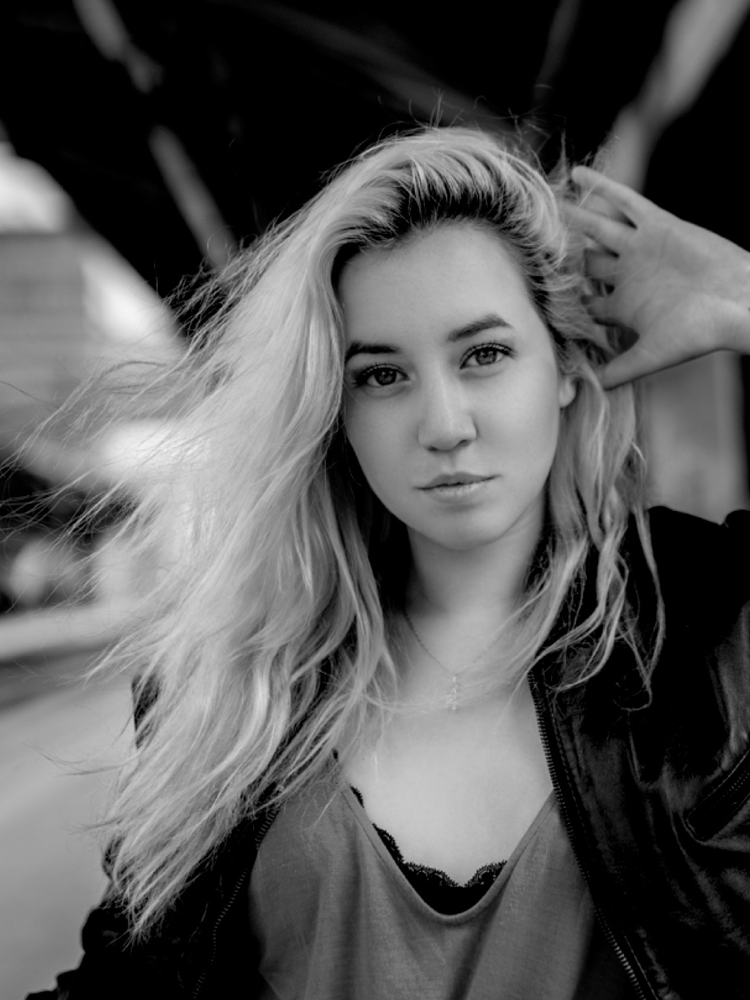
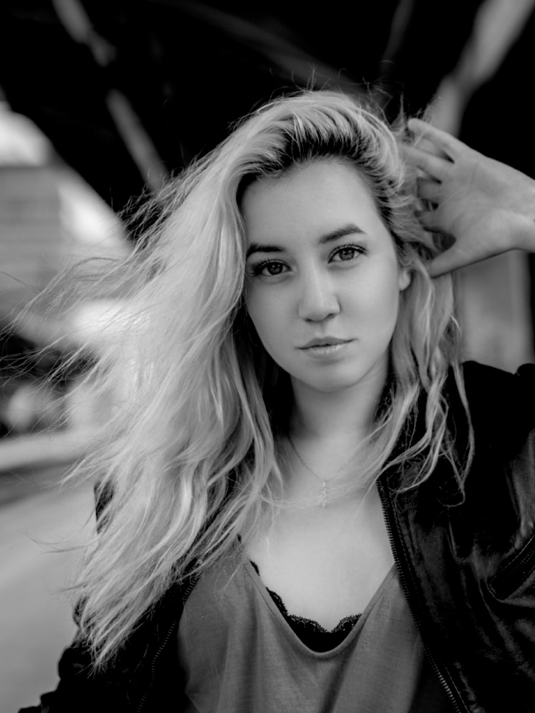

INICIO
OBRAS
ARTISTAS
NOSOTROS
CONTACTO
 

El tema principal de su obra es el de la violencia hacia a la mujer y cómo esta problemática está siendo normalizada en muchos casos, a pesar de que el Perú, en la actualidad, es el quinto país más peligroso para la mujer a nivel mundial, por lo cual, se centra en la narrativa local. Plantea su discurso a partir de su experiencia propia, utilizando el arte como medio transmisor de la importancia del diálogo, respecto a este tema y de la concentración social con respecto a la lucha interna que vive una víctima de abuso.
Asimismo, toca el tema de los trastornos psicológicos, al ser ella una paciente diagnosticada con Trastorno de Ansiedad Generalizada. Ha sido un tema recurrente dentro de su discurso como artista y busca generar un lazo empático con el espectador, utilizando su trabajo como canal demostrativo de este tipo de enfermedades, las cuales deben ser tomadas con mayor importancia y no deben ser minimizadas por parte de la sociedad.
EXPOSICIONES INDIVIDUALES
2019
Inmaculadas, Espacio La Sala
EXPOSICIONES COLECTIVAS
2019
Fábrica_100, LAC Galería
VII CONCURSO NACIONAL DE PINTURA 2019 - Sala Nazca, Ministerio de Cultura
ENTROPÍA GENERACIONAL - LAC Galería
EX MERGES - LAC Galería
PRIMATE - Tokio Galería
2018
Colectiva Parto 1095 - Espacio La Sala
Identidades conjuntas - Casa Cultural Grau
Superar el Vacío - Corriente Alterna
2017
Muestra cooperativa - Bar Efímero
Exposición de fin de año - Escuela deArteVisuales Contemporáneas Corriente Alterna
2016
Exposición de fin de año - Escuela de ArteVisuales Contemporáneas Corriente Alterna
2015
Exposición de fin de año - Escuela de ArteVisuales Contemporáneas Corriente Alterna
CURADURÍAS
2019
Asistente de investigación y curaduría en: Japan Attack - Aida Arte y Cultura
CONCURSOS
2019
Finalista del Premio de las artes MAPFRE de las artes
2018
Semifinalista del X Concurso Nacional de Pintura del BCRP
Obra